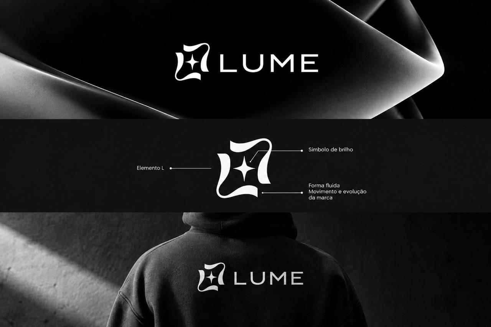

Apresentar
uma nova essência.
Para quem está começando, reposicionando uma marca ou preparando um novo capítulo.
- Direção criativa e identidade visual
- Fotografia de marca e retratos
- Site de apresentação

A GENTE FAZ A LUZ ENCONTRAR O MUNDO.
Filmes, fotografia e universos visuais.
Da primeira ideia à experiência digital.
Conceito antes de execução.
Alinhamento em cada etapa.
Coerência do início ao fim.
Conceito, imagem e movimento em diferentes encontros com a marca. Conheça uma seleção de projetos da LUME.
Conheça nossas frentesUm espaço para explorar luz, composição e interfaces.
Referências que revelam a nossa direção estética.
Laboratório visual: imagens de referência e estudos de interface. Esta seleção explora possibilidades estéticas; os projetos identificados da LUME estão na seção anterior.
Imagem, movimento e digital. Partes diferentes que se conectam para dar à sua marca uma presença inteira.
Presença que
faz sentido.
Estudo de composição. Imagens de referência e conceito de interface.
Uma imagem pode chamar atenção. Uma história bem construída pode ficar. Unimos estratégia, estética e emoção para aproximar marcas, pessoas e cultura.
Antes da câmera, vem a escuta. Antes do primeiro frame, uma intenção. É assim que transformamos ideias em narrativas e conceitos em experiências.
Seis frentes conectadas por uma mesma direção. Conceito, produção e presença digital, com escopo alinhado ao momento da sua marca.
Imagens com intenção, luz e personalidade. Um olhar cuidadoso para pessoas, produtos, espaços e marcas.
Entregas: Direção visual, seleção e tratamento das imagens.
Produção audiovisual do conceito à finalização. Filmes publicitários, institucionais, campanhas e conteúdo para conectar marcas e pessoas.
Entregas: Conceito, captação e edição alinhados ao formato.
Design e tecnologia no mesmo ritmo. Sites responsivos, páginas de campanha e experiências interativas que traduzem sua identidade.
Entregas: Design responsivo, desenvolvimento e orientação de uso.
Uma visão consistente em cada ponto de contato. Conceito visual, direção de arte e conteúdo para dar unidade à sua comunicação.
Entregas: Conceito, referências e diretrizes visuais para o projeto.
Criamos a linguagem visual que dá unidade a uma produção: referências, atmosfera, composição e escolhas estéticas a serviço da narrativa.
Entregas possíveis: Moodboard, linguagem visual e orientação estética da produção.
Damos estrutura à ideia antes de colocá-la em cena. Conceitos de campanha, roteiros e narrativas que conectam a mensagem ao seu público.
Entregas possíveis: Conceito, roteiro e direcionamento narrativo conforme o escopo.
Uma criação faz mais sentido quando nasce de uma necessidade real. Estes são alguns caminhos possíveis.
Para quem está começando, reposicionando uma marca ou preparando um novo capítulo.
Para valorizar um produto, registrar um espaço ou transformar uma história em conteúdo.
Para levar a identidade da sua marca a uma experiência digital clara, bonita e fácil de navegar.
O nosso olhar começa onde o automático termina. Explore a luz e descubra como uma nova direção transforma a mesma história.

Mova a luz. Mude a percepção.
Luz suave: volume, delicadeza e espaço para respirar.
Estudo visual com imagem de referência.
Acreditamos que toda ideia tem uma luz própria. Nosso trabalho é fazer essa luz encontrar o mundo.
A LUME Films é um estúdio criativo independente, fundado por Pedro e Breno. Nascemos do encontro entre ideias, estética e histórias — com o audiovisual como ponto de partida e novas linguagens como possibilidade.
Pedro e Breno estão à frente da LUME Films. Um estúdio independente que aproxima marcas, pessoas e cultura pelo poder das histórias bem contadas.
Vamos criar juntosFundador
Fundador
Entendemos sua essência, seu momento e a história que você quer contar.
Exploramos caminhos e construímos uma direção criativa com intenção.
Produzimos, desenhamos e desenvolvemos com cuidado em cada detalhe.
Refinamos a experiência e preparamos tudo para encontrar seu público.
O essencial para dar o próximo passo com tranquilidade.
Começamos entendendo sua ideia, seu objetivo e o que precisa ser criado. A partir dessa conversa, alinhamos o escopo, a direção visual e as etapas antes de iniciar a produção.
Sim. Os serviços podem ser pensados em conjunto para manter a mesma identidade em diferentes formatos. A combinação é definida conforme a necessidade do seu projeto.
Dependem do escopo, dos formatos e da complexidade de produção. Esses pontos são alinhados na proposta, antes de começar. O briefing ajuda a tornar essa conversa mais objetiva.
Conte o que você tem em mente.
A gente encontra um caminho juntos.